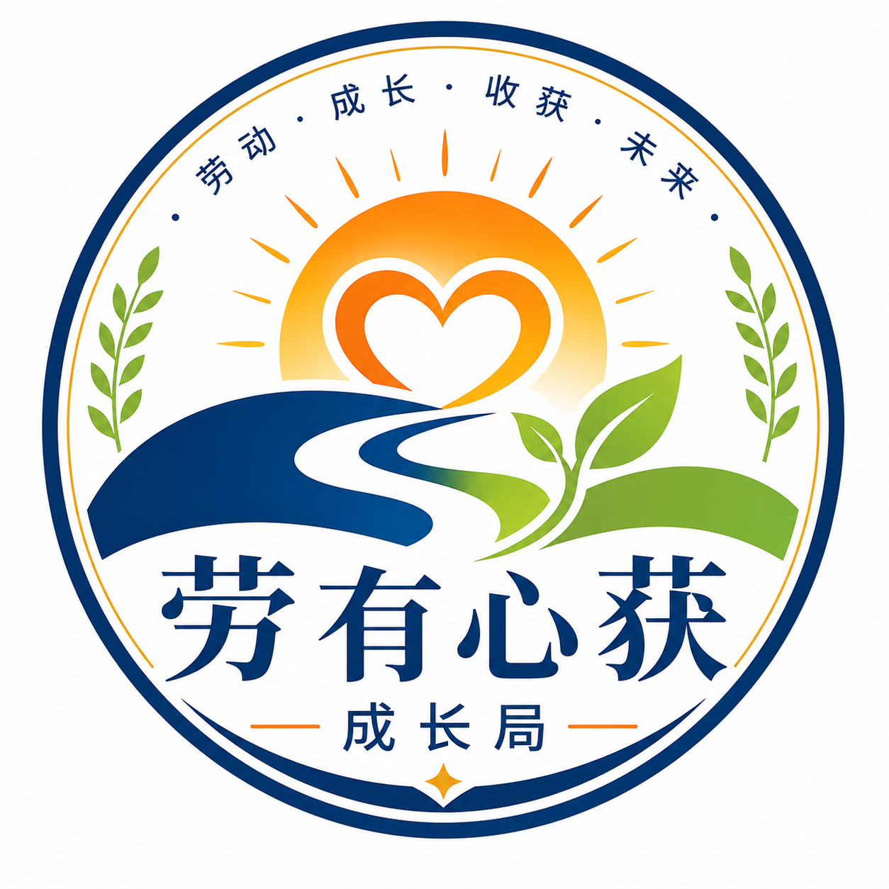

完成自我觉察
识别兴趣、优势、价值取向与就业适配状态，建立更加稳定的自我认知。
大学生就业成长支持项目
搭建可践行的生涯路径，消解成长迷茫与就业焦虑，将心绪内耗转化为持续前行的行动力，护航青年稳步走好求学与求职成长之路。

让自我觉察、职业图景与就业行动彼此衔接。
01 / 价值理念
在劳动实践之中完成自我觉察、探索职业图景，搭建清晰可落地的成长行动路径；疏导就业心理压力，将内在焦虑转化为前行的行动力量。
识别兴趣、优势、价值取向与就业适配状态，建立更加稳定的自我认知。
从真实劳动场景理解职业要求、岗位环境与发展可能，形成具体的职业认知。
将职业方向转化为目标、能力、实践与求职节点，形成可持续的行动方案。
02 / 服务范畴
本平台面向全体大学生，整合职业生涯规划指导与就业心理健康支持，围绕自我认知探索、生涯规划落地、实践行动推进提供系统化、持续性的成长赋能服务。
围绕劳动获得感、心理资本、自我效能与韧性开展测评，形成支持自我觉察与就业适配的成长画像。
看见自己的优势与需要通过职业认知、岗位案例、实践观察与生涯访谈，帮助学生从兴趣优势走向具体职业方向。
从兴趣走向职业认知围绕目标岗位、能力差距、实践安排与求职阶段，搭建清晰、可执行、可复盘的生涯路径。
把规划落实为行动节点聚焦求职压力、职业选择焦虑、就业挫折与行动信心，提供倾听、疏导、支持与必要转介。
稳定就业心理，恢复行动力量以“育心—育能—育志”为主线，将劳动实践、心理资本培育、能力训练与职业行动有机结合。
在实践中完成成长赋能以文章、视频和轻量化解压游戏普及就业心理知识，调适求职压力，支持学生恢复学习与行动状态。
看得懂，也用得上03 / 落地践行
围绕“自我觉察—职业探索—规划落地—实践践行”逐步推进，帮助学生把对未来的期待转化为当下可以完成的行动。
借助测评、反思与劳动体验，识别优势资源、就业心理状态与成长需要。
通过岗位认知、职业访谈与真实实践，形成对职业世界的具体理解。
明确目标岗位、能力准备、实践安排和阶段性求职任务，形成行动清单。
在劳动、课程、项目与求职行动中持续验证、调整和沉淀就业能力。
 把实践经历转化为就业成长证据。
把实践经历转化为就业成长证据。
04 / 育人目标
平台聚焦大学生群体，依托生涯规划专业体系，支撑学生完成自我探索、规划梳理与实践落地，护航青年稳步走好求学与求职成长之路。
形成清晰的自我认知与职业图景，知道自己是谁，也理解职业世界需要什么。
建立可执行的生涯路径与求职策略，将方向、能力和行动节点彼此衔接。
发展积极稳定的就业适配心理，提升面对选择、压力与挫折的调适能力。
实现劳动实践向就业能力的迁移，把真实经历沉淀为可表达、可验证的成长资本。
测评用于自我了解、课程匹配与成长记录，不替代临床诊断；心理支持以就业心理健康教育、倾听疏导和行动支持为主，必要时连接学校心理中心或正规专业资源。
从项目开始
了解自己、看清方向、缓解求职压力、找到下一步——从一项测评、一场实践或一篇科普开始。
自我探索、职业选择、求职准备或就业心理支持，都可以成为起点。
测评、课程、实践、文章、视频与解压游戏，形成多元化成长入口。
在实践中验证方向，在复盘中调整路径，在行动中积累就业能力。

05 / 社交账号内容同步
劳有心获成长局
文章、视频、劳动实践与就业心理科普持续更新，把项目内容带到学生日常可触达的地方。
持续更新中